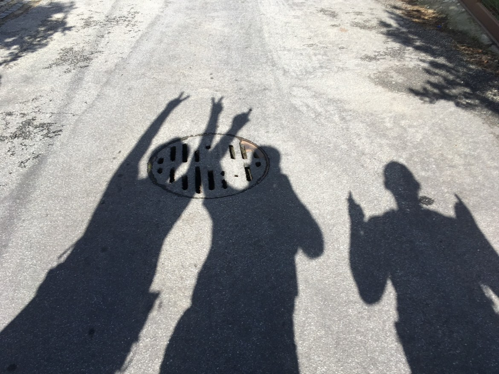

BLOG · TIMING
Best Time of Year to Walk the Camino - Is September the Best Month?

- TopicTiming
- Months walkedMay, June, July, August, September, October
- First Brothers walkSep 29 - Oct 12, 2019
- Next group walkSep 28 - Oct 18, 2027
Short answer: September is a very good month to walk a Camino, and it is the month we would pick first for Spain. May is a close second. But there is no perfect month. The best month depends on the route, the weather you handle best, and how you feel about crowds.
Everything in this post comes from our own caminos - our stage notes, our bookings and our photos. If we did not walk it or live it, it is not in here.
We have walked in May, June, July, August, September and October. Each month worked. Each month had a trade-off. That is the part the calendar does not tell you.
Why September works for us
Our first walk together started in Porto on September 29, 2019. We met the next day, September 30, in Sao Pedro de Rates. We walked into Santiago on October 11.
So when people call that a September Camino, they are only half right. A lot of the walking was early October. That is the point. Late September and early October give you fall walking without the worst parts of summer.
The heat is usually easing off in Spain and Portugal. The days are still long enough for normal stages. The busiest part of the summer is over. You still need rain gear, and you still need to book some nights as you go, but the whole thing feels less rushed.
We picked September 28 to October 18, 2027 for Camino 9, the Frances from Saint-Jean-Pied-de-Port to Leon. That was not an accident. When we had a real choice, we picked early fall again.
May is a close second
We walked the Portugues again in May 2023, Porto to Santiago and on to Finisterre. We were in Madeira in May 2024.
For Portugal, May is a strong month. You get spring weather, long days, and you are ahead of the summer rush. If you asked me to pick May or September for Porto to Santiago, I would have a hard time. Both are good. Pick the one that fits your holidays and your flights.
Madeira is different. We were based in Funchal and did day hikes. It was a good trip, but it does not prove much about walking town to town in Spain with a pack on your back. I am not going to pretend it does.
June: long days, mountain weather
Our June walk was Camino 8 in Tyrol, Austria, in June 2026. Long days helped. In the mountains, the weather can change fast, so layers and rain gear matter even when the morning starts clear.
June can be a fine month in Spain too. We just have not walked Spain in June. Our June was Austria, so that is the June I am going by.
If you walk in the Alps in June, plan like a walker, not a tourist. Start with more daylight than you need. Keep the rain jacket where you can reach it. Do not let a sunny breakfast fool you.
July worked, but I would not pick it first
In July 2025 we started the Camino del Norte at Irun. We left it after two days. The start of that route in July was beach-holiday country - busy, built up, and more expensive than we expected around San Sebastian, Orio and Bilbao.
We took the train to Ponferrada and finished on the Frances instead. We walked into Santiago on July 22, and the rescued trip became one of our favourites. So July did not ruin anything.
Still, if you have a choice, I would not pick July first for northern Spain. There are more people. Beds can be tighter. Prices can be higher near the coast. Start early, book a little sooner than we usually do, and do not assume the quiet trail from a spring video is the same trail in July. And one more reason that has nothing to do with Spain: July on Prince Edward Island is hard to beat. It is a hard month to leave home.
August: our August was Germany, not Spain
We walked the Rheinsteig in August 2022. That was Germany - the Rhine, castles, river towns, and a log cabin balcony at Kestert. August worked there.
But August in Germany is not proof about August in Spain. I see people mix that up online. Different country, different heat, different problem.
If Spain in August is the only time you can go, go. Just plan for heat like an adult: early starts, shorter days if you need them, more water, and a real stop in the middle of the day. Do not try to prove something at 2 p.m. in the sun.
October is better than people think
Most of our first Camino was October. Camino 2 was October 2021. Camino 6, Munich to Innsbruck, was October 2024.
October has been good to us. Cooler mornings. Fewer pilgrims than summer. Beds are usually easier to sort out as you go. It is a calmer month on the trail.
The trade-off is daylight. You have less of it. Rain is also a bigger factor, especially in Galicia. That is not a reason to stay home. It is a reason to pack properly and not plan a huge day with a late finish.
If you walk in late October, be honest about the clock. A 20 km day that ends at 4 p.m. is fine. A 35 km day that ends in the dark is a different plan.
Crowds matter as much as weather
People ask about the month like weather is the only issue. It is not.
From Sarria to Santiago, the last 100 km of the Frances is busy in high season. If that is your walk and you are going in July or August, expect company. Book sooner. Start earlier. Give yourself more time at the cathedral end, not less.
If crowds bother you, the route matters too. The Portugues Central was quieter for us than the Frances. The Norte in July felt like a beach holiday first and a pilgrim trail second. Same country, same month, very different feel.
This is why "what is the best month?" is only half the question. The full question is: what route, what month, how far each day, and what do you mind more - heat, rain, crowds, or short days?
The questions that settle it
- Do you handle heat well? If not, stay away from Spain in July and August if you can. Pick May, September or October.
- Do you mind rain? October and late September can be wet in the north. Bring the gear and walk anyway, or pick late spring.
- Do you want quiet or company? September on the Frances still has plenty of pilgrims. High summer has more. The Portugues is usually the calmer choice.
- Can you book ahead? We mostly book as we go. In July and August, I would book more nights in advance, especially near the coast and from Sarria in.
- How far do you walk in a day? Shorter days make almost any month easier. Long days in heat, or long days with early darkness, are where people get into trouble.
- Which route are you really talking about? Porto in May, the Frances in September, and Tyrol in June are not the same trip. Do not use one to judge the others.
My honest ranking, for Spain
For Spain, from the months we have actually walked:
- Late September and early October - best mix for us: less heat, fewer crowds, still enough daylight.
- May - close second, especially for Portugal.
- October - calm and cooler, but watch the daylight and pack for rain.
- July - it worked for us, but it is the one I would pick last of these four.
June and August in Spain are not on that list because we have not walked them. I am not ranking months I have not done.
For Germany and Austria, June, August and October all worked for us. Different walks, different weather, same rule: bring layers, bring rain gear, and do not trust a clear morning too far.
The honest summary
September is not magic. It just avoids the biggest problems for a lot of walkers: less heat than summer, fewer crowds, and still enough daylight to walk normal days.
If you can go in September, go. If May fits your life better, May is a good answer too. If work or family gives you July, go in July and plan for it.
The best month is the one you can actually walk. Pick a month you can live with, book the first night, and start walking.
---
From the trail to the page
These posts are the tidy lessons. The book is where they came from. Buen Camino, Brother: A WhatsApp Story is built from our WhatsApp messages - Mike in Canada, Nicki in Germany, planning in real time since 2019. Choosing routes and dates, settling daily distances, booking beds, changing plans mid-walk. The ups: eight caminos across Spain, Portugal, Germany and Austria. The downs: illness, a clinic visit, two pandemic years apart - and ordinary life between the walks, the hard parts and the good parts. And underneath it all, a friendship that started between strangers in 2019 and is still going almost every day. Learn from the real planning, not just the polished advice.
Coming January 2027. Join Camino Dispatches
Walking your own Camino? Keep the journal as you go. I built Townstamp after eight caminos of wishing for exactly this: every entry stamped with the town and the date, photos kept with the words, and a book-style PDF of the whole trip when you get home. Townstamp